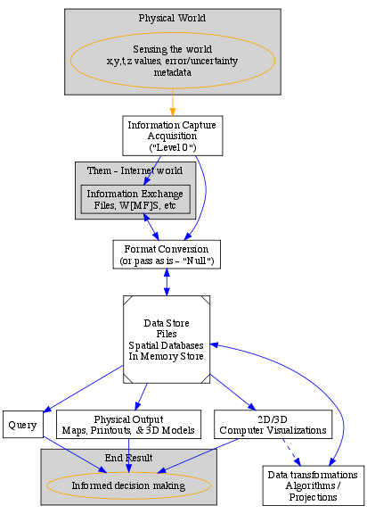
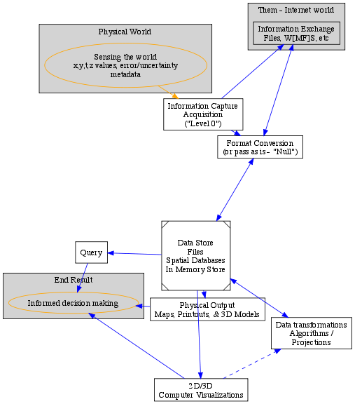
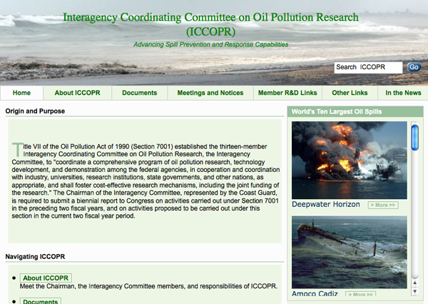
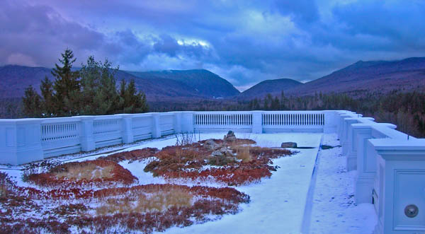
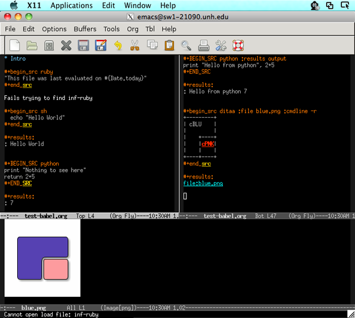
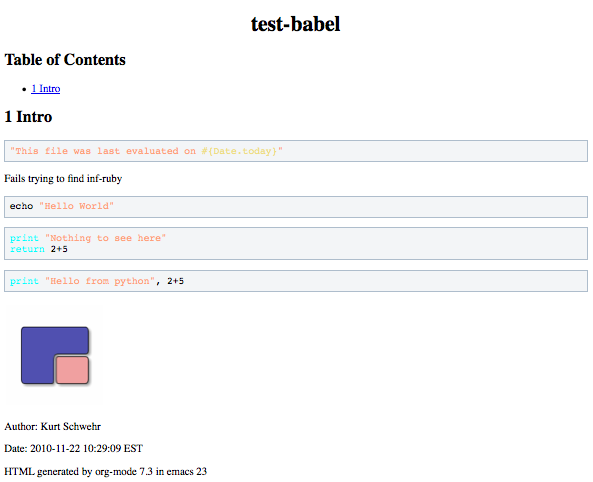
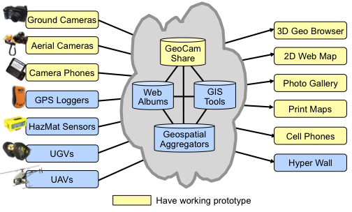
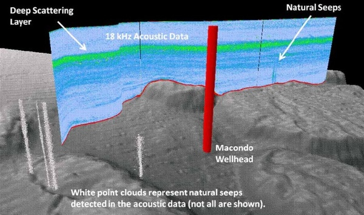
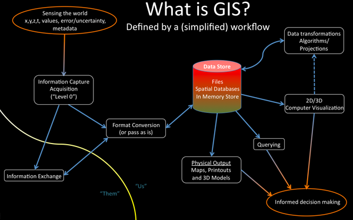
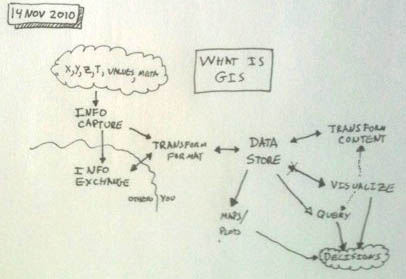

11.28.2010 17:40
A first try at graphviz
I am working on being able to add
graphs in my org-mode documents. I want to try ditaa, but first, I
wanted to take a look at graphviz. Graphviz has been on my "to try"
list for a very long time. The basics are pretty easy, but it gets
challenging if you want much in the way of control. I used my GIS
workflow figure that I made with PowerPoint last week as my
example. In the future, I will be using graphviz to show sensor
networks with their status and sensor values.
Here is how I ran all the different graphviz layout programs:
Not nearly as nice as I would like, but definitely functional.
Here is how I ran all the different graphviz layout programs:
for mode in dot neato twopi circo fdp sfdp; do
${mode} -Tpng gis.dot -o gis-${mode}.png
done
And here is the code that I used to define the graph. If you have a
graph up next to the code, you can probably guess most of what it
was doing. Someone who really knows graphviz would likely make a
much nicer dot file and have prettier graphics come out.
// -*- c++ -*- Sort of close as an emacs mode
digraph GIS {
size ="6,6"; // not working?!?
subgraph cluster_realworld {
label="Physical World";
bgcolor=lightgrey;
sensing [shape=ellipse, color=orange, label="Sensing the world\nx,y,t,z values, error/uncertainty\nmetadata"];
}
edge [color=orange];
sensing -> capture;
node [shape=box];
edge [color=blue];
subgraph cluster_internetworld {
label = "Them - Internet world";
bgcolor = lightgrey;
info_exchange [label="Information Exchange\nFiles, W[MF]S, etc"]
}
capture -> info_exchange;
capture -> fmt_conversion;
edge [dir=both];
info_exchange -> fmt_conversion;
fmt_conversion -> store;
capture [shape=box, label="Information Capture\nAcquisition\n(\"Level 0\")"];
fmt_conversion [label="Format Conversion\n(or pass as is - \"Null\")"];
store [bgcolor = grey, shape=Msquare, label="Data Store\nFiles\nSpatial Databases\nIn Memory Store"];
edge [dir=forward];
store -> query -> decide;
store -> physical_out -> decide;
store -> viz -> decide;
edge [dir=both];
store -> transform;
edge [dir=forward, color=blue, style=dashed];
viz -> transform;
physical_out [ label="Physical Output\nMaps, Printouts, & 3D Models" ];
query [ label="Query" ];
viz [ label="2D/3D\nComputer Visualizations" ];
transform [ label="Data transformations\nAlgorithms /\nProjections" ];
subgraph cluster_result {
label="End Result";
bgcolor=lightgrey;
decide [ shape=ellipse, color=orange, label="Informed decision making" ];
}
}
Here are the best two results using dot and fdp respectively:

Not nearly as nice as I would like, but definitely functional.
11.28.2010 15:49
USCG Interagency Coordinating Committee on Oil Pollution Research (ICCOPR)
I just found out about this US Coast
Guard (USCG) web site: Interagency Coordinating Committee on
Oil Pollution Research (ICCOPR). I don't really know much about
ICCOPR.
Some highlights:
Some highlights:
Present-day Activities The Interagency Committee continues to serve as a forum for its federal members to coordinate and maintain awareness of ongoing oil pollution research activities. Members of the Interagency Committee interact in a number of venues, including conferences, workshops, meetings of the National Response Team Science and Technology Subcommittee, and through formal meetings. Formal meetings of the Interagency Committee are normally scheduled on a semi-annual basis.The organizations listed as members:
- United States Coast Guard (USCG)
- National Oceanic and Atmospheric Administration (NOAA)
- National Institute of Standards and Technology (NIST)
- Department of Energy (DOE)
- Bureau of Ocean Energy Management, Regulation, and Enforcement (BOEMRE)
- United States Fish and Wildlife Service (USFWS)
- Maritime Administration (MARAD)
- Pipeline and Hazardous Materials Safety Administration(PHMSA)
- United States Army Corps of Engineers (USACE)
- United States Navy (USN)
- Environmental Protection Agency (EPA)
- National Aeronautics and Space Administration (NASA)
- Federal Emergency Management Agency (FEMA) - United States Fire Administration (USFA)

11.27.2010 16:21
Mt Washington
We were just up at the Mt Washington
Hotel yesterday. This was the first time I'd driven through
snow this season. Very pretty day. This first shot is looking East
and Mt Washington is just off the right side of the picture, but it
was up in the clouds.
This second image is looking south towards Crawford Notch from the roof of the new wing (the Jewel Terrace).
This second image is looking south towards Crawford Notch from the roof of the new wing (the Jewel Terrace).

11.25.2010 10:55
A batch of videos
Today is Thanksgiving in the US. I've
been getting behind on things I wanted to post, so I figured I
would put up some videos that people can watch while they are
recovering from too much turkey.
First a video from Dan CaJacob at SpaceQuest. He has been making Google Earth tours of some of their Satellite based AIS (S-AIS) logs. This is a great video showing the satellite working great all over the globe. The video is at 48X realtime so that it is easier to see what is going on. Right now, SpaceQuest is decimating the data on spacecraft, so the receiver performance is actually better than what you see here. I have been really impressed with the data that I have seen. According to Dan, they are currently downloading roughly 250,000 messages per day with around 25,000 unique vessels a day from their one satellite.
This week, Andy McLeod and I got a web camera from Rob Braswell working on the roof of Jackson Lab. The are a number of goals for this camera that include monitoring the trees during the season, having the ability to see what is happening if the tide gauge has problems, allow CCOM and JEL staff to see what is going on at the pier when they are not there, monitoring buoys that are deployed in the field of view and tracking ice coverage.
This week, Google posted The Lost Archives of the Google Geo Developers Series.
Thijs Damsma from Deltares in the Netherlands talks about Open Earth Tools and Visualization of Coastal Data Through KML. The video quality is poor, but you can get the idea.
Happy Thanksgiving!
First a video from Dan CaJacob at SpaceQuest. He has been making Google Earth tours of some of their Satellite based AIS (S-AIS) logs. This is a great video showing the satellite working great all over the globe. The video is at 48X realtime so that it is easier to see what is going on. Right now, SpaceQuest is decimating the data on spacecraft, so the receiver performance is actually better than what you see here. I have been really impressed with the data that I have seen. According to Dan, they are currently downloading roughly 250,000 messages per day with around 25,000 unique vessels a day from their one satellite.
This week, Andy McLeod and I got a web camera from Rob Braswell working on the roof of Jackson Lab. The are a number of goals for this camera that include monitoring the trees during the season, having the ability to see what is happening if the tide gauge has problems, allow CCOM and JEL staff to see what is going on at the pier when they are not there, monitoring buoys that are deployed in the field of view and tracking ice coverage.
This week, Google posted The Lost Archives of the Google Geo Developers Series.
Thijs Damsma from Deltares in the Netherlands talks about Open Earth Tools and Visualization of Coastal Data Through KML. The video quality is poor, but you can get the idea.
Happy Thanksgiving!
11.22.2010 10:32
org-babel
Since starting to work on my PhD, I
have strived to make my work be reproducable. I wanted to be able
to start from my raw data and writing and with one command (e.g.
"make") do all the processing, build the figures, and produce the
journal ready paper. I was definitely not even close to this goal.
I used Fledermaus, Photoshop and Illustrator to modify or produce
some of my figures. Using Latex got me closer to this goal. I was
able to at least keep my figures separate from the writing (which
I'm not sure is really even possible with MS Word) and have all
sorts of scripts do the work. Unfortunely, after 4 and a half years
from finishing my PhD, it would take me some serious work to get
things to work from beginning to end. That means my research is
that much less valuable - my data is not in the MAGIC paleomag
database and should someone ask, I don't have the time to get
things back in shape.
It turns out that there are a lot of other people with this same goal. There are two camps that I've found. First is Literate Programming started by Knuth. While, I have met him, sat through one of his talks at Stanford ("Knuth's current favorite emacs tricks"; which really was 5-6 of us sitting around with him for an hour), and had a copy of it literate programming book, I never got what he was getting at until last week (15 years later). I got turned around by his discussions of Weave, Tangle, and CWEB.
The second was the Reproducible Research movement that wikipedia says was started by Jon Claerbout, a geophysics professor at Stanford. How did a I miss out of this while I was there? He has a short essay: Reproducible Computational Research: A history of hurdles, mostly overcome. Wow, I really missed out looking at his books, e.g. Basic Earth Imaging (BEI) There is now ReproducibleResearch.net.
I was trying to read more about the emacs org-babel, which is a way to write text in org-mode and have the code snippets actually run and work with you to produce the document. I'm not sure this would work out to produce a journal paper directly, but it would be pretty close. It can document all of your thinking and small code bits together in one place. This stuff is not easy, but if you learn it, I'm sure it will be with you for the next 20+ years, just like emacs has been with me for the last 20 years.
I've had a bit of trouble getting babel to work. The error messages are not very informative, but here is where I am at so far. The first trick is that org-mode that comes with emacs 23.1 or Aquamacs circa 2010 is just too old to have everything you would want. I had to ditch org-mode 6.3.
The I tried C-c C-e b to open an HTML version in my default web browser (which is Firefox). It asks every time if it can run the ditaa graph section, but never exports the results from the other languages. I don't understand why the results from the other languages do not get included.
This is definitely a start but is not enough for me to use it for my class tomorrow that I'm trying to write, which will be in python and needs to have the results available. However, the potential for using this while working through my research is HUGE. Finally, I understand what Knuth was talking about with Literate Programming. It's great when you can stick with the language at hand and ignore CWEB.
Update 2010-11-23: Trey Smith suggested the idea of using python doctest if you are just using python. While this is definitely not as flexible as org-babel, there are a lot of cases where having a doctest only file would make for a really great final document. It doesn't execute the same way as babel, but it does check itself for consistency. I've seen python projects with large doctest files used for testing and they are usually very easy to follow and definitely helpful to people learning those packages. A clever way to reuse an existing technology.
It turns out that there are a lot of other people with this same goal. There are two camps that I've found. First is Literate Programming started by Knuth. While, I have met him, sat through one of his talks at Stanford ("Knuth's current favorite emacs tricks"; which really was 5-6 of us sitting around with him for an hour), and had a copy of it literate programming book, I never got what he was getting at until last week (15 years later). I got turned around by his discussions of Weave, Tangle, and CWEB.
The second was the Reproducible Research movement that wikipedia says was started by Jon Claerbout, a geophysics professor at Stanford. How did a I miss out of this while I was there? He has a short essay: Reproducible Computational Research: A history of hurdles, mostly overcome. Wow, I really missed out looking at his books, e.g. Basic Earth Imaging (BEI) There is now ReproducibleResearch.net.
I was trying to read more about the emacs org-babel, which is a way to write text in org-mode and have the code snippets actually run and work with you to produce the document. I'm not sure this would work out to produce a journal paper directly, but it would be pretty close. It can document all of your thinking and small code bits together in one place. This stuff is not easy, but if you learn it, I'm sure it will be with you for the next 20+ years, just like emacs has been with me for the last 20 years.
I've had a bit of trouble getting babel to work. The error messages are not very informative, but here is where I am at so far. The first trick is that org-mode that comes with emacs 23.1 or Aquamacs circa 2010 is just too old to have everything you would want. I had to ditch org-mode 6.3.
cd wget http://orgmode.org/org-7.3.tar.gz tar xf org-7.3.tar.gz cd org-7.3 make # Convert the emacs lisp to elc byte codeThen I had to change my .emacs file to add these lines:
(setq load-path (cons "~/org-7.3/lisp" load-path)) (require 'org-install) (org-babel-do-load-languages 'org-babel-load-languages '((R . t) (sh . true) (python . true) (ruby . true) (ditaa . true) ))It seems strange to have to specify languages. Shouldn't most languages be turned on by default? Then I started up emacs23 from fink under X11. Things then worked. I can press C-c C-c in each of the src blocks and I get the code to run. It does ask you if you want to run the code. This could be the worst of the worst code injection issues if you were not paying attention. But unlike Work macros, this stuff is right in front of you out in the open. Ruby is the primary example on the web, but apparently requires extra emacs modules be installed (e.g. inf-ruby) that I don't have. I don't use ruby. It seems like emacs-lisp and sh should have been the two primary introduction cases.

The I tried C-c C-e b to open an HTML version in my default web browser (which is Firefox). It asks every time if it can run the ditaa graph section, but never exports the results from the other languages. I don't understand why the results from the other languages do not get included.

This is definitely a start but is not enough for me to use it for my class tomorrow that I'm trying to write, which will be in python and needs to have the results available. However, the potential for using this while working through my research is HUGE. Finally, I understand what Knuth was talking about with Literate Programming. It's great when you can stick with the language at hand and ignore CWEB.
Update 2010-11-23: Trey Smith suggested the idea of using python doctest if you are just using python. While this is definitely not as flexible as org-babel, there are a lot of cases where having a doctest only file would make for a really great final document. It doesn't execute the same way as babel, but it does check itself for consistency. I've seen python projects with large doctest files used for testing and they are usually very easy to follow and definitely helpful to people learning those packages. A clever way to reuse an existing technology.
11.19.2010 09:43
Today's CCOM seminar will be streamed live
Update 22-Nov-2010: The team
had trouble with streaming the video. It turned out to be some sort
of poor interaction between Keynote and GoToMeeting. Matt Plumlee
was able to at least hear the talk and put in a remote question. It
might take a few more speakers to work out all the kinks.
With the support of IVS, one of our CCOM Industrial Partners, Erin from IVS, Monica, and Niki have worked to make today's CCOM seminar be our first seminar to be streamed live. This is a trial, so there might be troubles as they get things worked out, but you should be able to watch and Monica will we watching for questions to be written in to be answered at the end of the seminar. There are a limited number of people who can attend. We appologize if we run out of slots for people to join. If there are multiple people at your site watching, I would suggest trying to join up and watch on a single computer.
CCOM/JHC GoToWebinar
With the support of IVS, one of our CCOM Industrial Partners, Erin from IVS, Monica, and Niki have worked to make today's CCOM seminar be our first seminar to be streamed live. This is a trial, so there might be troubles as they get things worked out, but you should be able to watch and Monica will we watching for questions to be written in to be answered at the end of the seminar. There are a limited number of people who can attend. We appologize if we run out of slots for people to join. If there are multiple people at your site watching, I would suggest trying to join up and watch on a single computer.
CCOM/JHC GoToWebinar
Betsy Baker: Can lawyers think like scientists? 3PM EST Abstract The Center for Ocean and Coastal Mapping/Joint Hydrographic Center at UNH (CCOM/JHC) has played a key role in collecting extended continental shelf data for the United States under the Law of the Sea Convention. Betsy Baker, a Vermont Law School professor, will talk about how law and science interact in that process, based on her time working with CCOM/JHC scientists on two USCGC Healy Arctic extended continental shelf mapping deployments in 2008 and 2009. She will draw connections between the origins of the LOS Convention and how the continental shelf is regulated today, and touch briefly on the limits of both science and law when it comes to addressing disasters like the Deepwater Horizon/BP Macondo spill. Bio Betsy Baker is associate Professor, Vermont Law School and spent 2009-2010 as a Dickey Research Fellow at the Dartmouth College Institute of Arctic Studies. Her current research examines Canadian and U.S. federal-Inuit relations and their effect on environmental protection; means to improve access to the Arctic Ocean for scientific research (working with University of Alaska Fairbanks Geophysical Institute colleagues); and analyzing arctic offshore oil and gas regulatory regimes. She earned her J.D. at the University of Michigan her LL.M. and Dr. iur at Christian-Albrechts-Universitat zu Kiel, Germany, where she was an Alexander von Humboldt Chancellors Fellow.
11.17.2010 13:01
Guest post - Trey on GIS architectures
I'd like to introduce Trey Smith. He
and I worked together at CMU Pittsburgh for a year on Bulwinkle, an
ATRV rover and Mars Autonomy software. I did a guest post for Trey
back in the summer of 2009:
Sonamo Air Attack. Trey offered up this guest post based on his
experiences with developing emergency response systems while
working at NASA Ames (e.g. GeoCam).
On to Trey's thoughts:
Here's a different take on a GIS architecture diagram, something we use when presenting GeoCam.
It obviously doesn't address all the issues you're trying to get at with your diagram, but the thing I like about it is it emphasizes that there are lots of data sources and lots of visualization tools, so that no one software tool can do everything, any particular software tool you write is just a tiny part of the overall system, and open standards are super important.
Another way I think about this stuff is to separate GIS modules into three categories:
Like: If you have a new sensor, make it produce KML and it can be picked up by an aggregator/visualizer like ERMA almost for free. And ERMA offers great value but doesn't have to solve all the issues of where to get the data in-house -- if you have a platform that's getting used, people will figure out how to contribute data on their own.
A very cool example of this is Francis Enomoto's Collaborative Decision Environment. It's almost a pure aggregator, basically just a KML index file that points to a bunch of other KML data sources that are often relevant to firefighters. Very helpful, but Francis doesn't have to do too much to maintain it because of the community he's piggybacking on.
On to Trey's thoughts:
Here's a different take on a GIS architecture diagram, something we use when presenting GeoCam.
It obviously doesn't address all the issues you're trying to get at with your diagram, but the thing I like about it is it emphasizes that there are lots of data sources and lots of visualization tools, so that no one software tool can do everything, any particular software tool you write is just a tiny part of the overall system, and open standards are super important.
Another way I think about this stuff is to separate GIS modules into three categories:
- Feeds
-
- Sensors
- Manual data entry interfaces
- Aggregators
-
- Curate data sources
- Collect history
- Run analysis (e.g. plume dispersion)
- Detect events (e.g. near collisions)
- Produce derived feeds
- Visualizers
-
- Human interfaces to view data
Like: If you have a new sensor, make it produce KML and it can be picked up by an aggregator/visualizer like ERMA almost for free. And ERMA offers great value but doesn't have to solve all the issues of where to get the data in-house -- if you have a platform that's getting used, people will figure out how to contribute data on their own.
A very cool example of this is Francis Enomoto's Collaborative Decision Environment. It's almost a pure aggregator, basically just a KML index file that points to a bunch of other KML data sources that are often relevant to firefighters. Very helpful, but Francis doesn't have to do too much to maintain it because of the community he's piggybacking on.

11.17.2010 12:43
CCOM and NOAA (really Tom Weber et al) on Science NOW
Wow! Go Tom.
Listening for Oil Spills [sciencemag.org] (as in Science)
Science has a whole section dedicated to the spill.
http://news.sciencemag.org/oilspill/
Listening for Oil Spills [sciencemag.org] (as in Science)
... The researchers, from the University of New Hampshire's (UNH's) Center for Coastal and Ocean Mapping (CCOM) in Durham and the National Oceanic and Atmospheric Administration (NOAA), wanted to try sonar because its wide view can look at entire swaths of ocean at the same time. But no one had shown how to use the technology to map or track oil spills. "We were really doing crisis science. ... There were no proven methods for doing this," says team member Thomas Weber, an acoustician at CCOM. ...It looks like the press process has added dithering to this image, but it is still cool!

Science has a whole section dedicated to the spill.
http://news.sciencemag.org/oilspill/
11.17.2010 08:13
NOAA issuing "NOVAs" for whale speed violations
NOAA Enforces Right Whale Ship Strike Reduction Rule - Vessels
charged for allegedly speeding where endangered whales calve, feed,
migrate [NOAA] and
Seven vessels accused of violating Right Whale rule [Mike at
gCaptain]
Note: I am not personally involved in the law enforcement side of NOAA.
I don't want whales to be killed, but I have lots of worries about how this was done. Was this based on AIS? Was it NAIS? Which algorithm was used to determine a ship was in violation? Was this based on the SOG field or a calculation of distance vrs time? What was the minimum threshold of time to be considered a violation? Who's software was used to make this calculation? How many AIS stations were used to verify this? Were GPS issues on the ship considered. And what other measures were used to verify the speed and identity of the ships (visual, radar, etc)? Why going too fast, were the ships called on the VHF to let them know they were in violation. Was any of my code used in the data collection or processing? I'm guessing my code was used for decoding the messages and loading them into a database.
NOAA needs to release the vessel names, time ranges, and methods used to figure out violations. NOAA might also have the writers check that they are defining terms like NOVA the first time they are used, not three paragraphs later.
Christin Khan has it right in her blog post with maps of where and when the restrictions are active: {Press} NOAA: Ship Speed Restrictions to Protect Endangered North Atlantic Right Whales
Note: I am not personally involved in the law enforcement side of NOAA.
I don't want whales to be killed, but I have lots of worries about how this was done. Was this based on AIS? Was it NAIS? Which algorithm was used to determine a ship was in violation? Was this based on the SOG field or a calculation of distance vrs time? What was the minimum threshold of time to be considered a violation? Who's software was used to make this calculation? How many AIS stations were used to verify this? Were GPS issues on the ship considered. And what other measures were used to verify the speed and identity of the ships (visual, radar, etc)? Why going too fast, were the ships called on the VHF to let them know they were in violation. Was any of my code used in the data collection or processing? I'm guessing my code was used for decoding the messages and loading them into a database.
NOAA needs to release the vessel names, time ranges, and methods used to figure out violations. NOAA might also have the writers check that they are defining terms like NOVA the first time they are used, not three paragraphs later.
Christin Khan has it right in her blog post with maps of where and when the restrictions are active: {Press} NOAA: Ship Speed Restrictions to Protect Endangered North Atlantic Right Whales
11.16.2010 17:38
What is GIS? A workflow definition
I took my crummy initial workflow
figure and presented it to the Research Tools class today on the
white board. Topics like this are always better the second time
around and I got some great feedback from the folks in the
room.
This is definitely over simplified, but hopefully it will be helpful to people learning about GIS tools and techniques. It leaves out the twisty maze that can be GIS in groups with WMS/WFS, diverse databases, different working standards, and sneaker nets of USB drives.
An aside: The Apple X11 server is way flakier after I updated to 10.6.5 yesterday. It fconsistantly locks up emacs when I user Apple-` to switch between windows. What gives? This makes me want to switch back to 100% linux.
Trackback: 2010-11-19: Friday Geonews: ESRI's Open Source Geoportal Server, Yahoo Local Offers, REST Explained Again, MapQuest My Maps, and much more [Slashgeo]

This is definitely over simplified, but hopefully it will be helpful to people learning about GIS tools and techniques. It leaves out the twisty maze that can be GIS in groups with WMS/WFS, diverse databases, different working standards, and sneaker nets of USB drives.
An aside: The Apple X11 server is way flakier after I updated to 10.6.5 yesterday. It fconsistantly locks up emacs when I user Apple-` to switch between windows. What gives? This makes me want to switch back to 100% linux.
Trackback: 2010-11-19: Friday Geonews: ESRI's Open Source Geoportal Server, Yahoo Local Offers, REST Explained Again, MapQuest My Maps, and much more [Slashgeo]
11.14.2010 16:23
Thoughts on GIS
After writing this post, I find my
view of GIS more foggy than when I started a couple hours
ago.
Today, I'm trying to rethink how to present Google Earth to the Research Tools class on Tuesday. Despite what some people say, I really do believe that tools like spatial databases, spatial data transformation libraries (e.g. gdal, proj, and geos), and virtual globes are all GIS software. I watched two talks on GIS at CCOM in the last two weeks and realize that I have a very different view of what GIS is compared to many people. For those who just use ArcGIS, I see how they like having to deal with just one view of the vocabulary and concepts even if it is occasionally limiting.
I keep having problems where I discover that ArcGIS users have specific views of concepts that are focused on how ESRI interacts with data or defines algorithms. I haven't really used Arc/Info since Arc 6 back in about 1995 when several factors combined to convince me to stop using Arc and focus on VEVI, MarsMap, Viz, XCore, and other custom solutions.
I need to figure out what other people think makes up GIS. I started reading the Wikipedia article on Geographic Information Systems. Now I feel like I know less. What a confusing and poorly written article. I'm not even sure how to jump in and make some improvements. I am not sure what the "GIS Uncertainty" section is really trying to get at. What is the "Getty Thesaurus of Geographic Names" doing in a section on uncertainty?
So how do I view GIS? I consider GIS to by any tool that works to process geographic space-time data (x,y,z,t,data values,error/uncertainty,metadata) towards the end of allowing humans or machines to make decisions. This ranges form paper & pencil / paper maps through to high end visualization systems. Here is quick sketch of general GIS flow that I whipped up. My apologies for this not really being readable.
You start with measurements or model output that has values at a point in space and time. If you think you don't have time, you are mistaken. Think about a map from around 1900 of roads in the United States. You might not think that the roads have time for each point, but they do, but you can represent that time with the same time range. The "meta" in my figure is the metadata. I don't think time should be considered as metadata - it's just too important.
When the data is captured by some system (paper, logging, the computer running a simulation, ship collecting sonar data, etc), it is in its "level 0" or initial form. BTW, this is data that you should be archiving in the deep store (e.g. NGDC) if possible. You can then transform the format of the data to something else that may be more directly usable (or apply the "null" operator that just passes the data right through). The wavy line defines what the collective "you" does with the data. Think of that as sometimes just a person, but you can scale this up to a "you" that includes thousands of people (as in the data flowing around in ERMA/GeoPlatform). On the other side are the people who want to pull that data into their systems or that you want to get data from.
Then there is one or more centralized stores of data. This could range from files on disk, databases, data sitting in memory caches etc. This used to be a simple thing, but with the internet, this is now a pretty hard concept to fully define. From that store, you can transform and store new data products, create physical maps/plots/plastic models (physical items), make queries, or use computer visualization techniques.
However, the end goal of all this is to allow people to make decisions about something. It can often be difficult to remember this in current GIS systems as the person making the decision might be far removed in space and time from the day-to-day work of GIS. Think of the ship captain who has to make a decision on the bridge of a ship of how to navigate a complicated sea route when conditions change. Their chart came through a GIS and some of the raw input that went into the representation of the ocean environment might come from data collected more than 150 years ago!
In reading though the discussion of raster versus vectors in GIS, I have to take a step back and view this as an issue of which data structure best represents the information in a way that it can effectively be used. If you view it this way, it's not a black and white raster vrs vector, but a range of choices that also include all sorts of interesting representations that include quad-trees, image tiles, triangle meshes, directed graphs, contours, etc. Even when it comes to a raster representation, I can see cases where one "value" per "band" for a cell is limiting. The folks of the nosql databases have really brought this forward. Certain problems, may be better addressed by an XML tree hanging off of each cell.
Thinking about projections, I have a bone to pick about people referring to geographic implying that it means just one thing (Lat/Lon with the WGS84 ellipsoid; EPSG 4326). I have trouble with the terms projected and unprojected. Geodysists refer to unprojected as things with spherical coordinates. But looking at the Mac dictionary, I see two definitions that help to clarify things. I think of projection at a generic transformation, but it's not really that.
Today, I'm trying to rethink how to present Google Earth to the Research Tools class on Tuesday. Despite what some people say, I really do believe that tools like spatial databases, spatial data transformation libraries (e.g. gdal, proj, and geos), and virtual globes are all GIS software. I watched two talks on GIS at CCOM in the last two weeks and realize that I have a very different view of what GIS is compared to many people. For those who just use ArcGIS, I see how they like having to deal with just one view of the vocabulary and concepts even if it is occasionally limiting.
I keep having problems where I discover that ArcGIS users have specific views of concepts that are focused on how ESRI interacts with data or defines algorithms. I haven't really used Arc/Info since Arc 6 back in about 1995 when several factors combined to convince me to stop using Arc and focus on VEVI, MarsMap, Viz, XCore, and other custom solutions.
I need to figure out what other people think makes up GIS. I started reading the Wikipedia article on Geographic Information Systems. Now I feel like I know less. What a confusing and poorly written article. I'm not even sure how to jump in and make some improvements. I am not sure what the "GIS Uncertainty" section is really trying to get at. What is the "Getty Thesaurus of Geographic Names" doing in a section on uncertainty?
So how do I view GIS? I consider GIS to by any tool that works to process geographic space-time data (x,y,z,t,data values,error/uncertainty,metadata) towards the end of allowing humans or machines to make decisions. This ranges form paper & pencil / paper maps through to high end visualization systems. Here is quick sketch of general GIS flow that I whipped up. My apologies for this not really being readable.

You start with measurements or model output that has values at a point in space and time. If you think you don't have time, you are mistaken. Think about a map from around 1900 of roads in the United States. You might not think that the roads have time for each point, but they do, but you can represent that time with the same time range. The "meta" in my figure is the metadata. I don't think time should be considered as metadata - it's just too important.
When the data is captured by some system (paper, logging, the computer running a simulation, ship collecting sonar data, etc), it is in its "level 0" or initial form. BTW, this is data that you should be archiving in the deep store (e.g. NGDC) if possible. You can then transform the format of the data to something else that may be more directly usable (or apply the "null" operator that just passes the data right through). The wavy line defines what the collective "you" does with the data. Think of that as sometimes just a person, but you can scale this up to a "you" that includes thousands of people (as in the data flowing around in ERMA/GeoPlatform). On the other side are the people who want to pull that data into their systems or that you want to get data from.
Then there is one or more centralized stores of data. This could range from files on disk, databases, data sitting in memory caches etc. This used to be a simple thing, but with the internet, this is now a pretty hard concept to fully define. From that store, you can transform and store new data products, create physical maps/plots/plastic models (physical items), make queries, or use computer visualization techniques.
However, the end goal of all this is to allow people to make decisions about something. It can often be difficult to remember this in current GIS systems as the person making the decision might be far removed in space and time from the day-to-day work of GIS. Think of the ship captain who has to make a decision on the bridge of a ship of how to navigate a complicated sea route when conditions change. Their chart came through a GIS and some of the raw input that went into the representation of the ocean environment might come from data collected more than 150 years ago!
In reading though the discussion of raster versus vectors in GIS, I have to take a step back and view this as an issue of which data structure best represents the information in a way that it can effectively be used. If you view it this way, it's not a black and white raster vrs vector, but a range of choices that also include all sorts of interesting representations that include quad-trees, image tiles, triangle meshes, directed graphs, contours, etc. Even when it comes to a raster representation, I can see cases where one "value" per "band" for a cell is limiting. The folks of the nosql databases have really brought this forward. Certain problems, may be better addressed by an XML tree hanging off of each cell.
Data capture-entering information into the system-consumes much of the time of GIS practitioners.Just like software maintenance and debugging typically consume 95% of the software life cycle, I believe that is the same for most GIS data these days. An entire LIDAR survey might take a day to collection, but I would be money, that people will spend orders of magnitude more time working with the data to produce the intended products.
The majority of digital data currently comes from photo interpretation of aerial photographsThat's a pretty strong quote about where data comes from. In the world of marine sciences, this is most definitely not true!
Thinking about projections, I have a bone to pick about people referring to geographic implying that it means just one thing (Lat/Lon with the WGS84 ellipsoid; EPSG 4326). I have trouble with the terms projected and unprojected. Geodysists refer to unprojected as things with spherical coordinates. But looking at the Mac dictionary, I see two definitions that help to clarify things. I think of projection at a generic transformation, but it's not really that.
5 Geometry draw straight lines from a center of or parallel lines through every point of (a given figure) to produce a corresponding figure on a surface or a line by intersecting the surface. * draw (such lines). * produce (such a corresponding figure). 6 make a projection of (the earth, sky, etc.) on a plane surface.
11.13.2010 09:11
Ben Smith's UNIX Step-by-Step
This morning, I'm still recovering
from an annoying cold. I made a large pot of coffee (decaf) and
found my oversized reading chair in my sunroom. With the cat on my
lap, I spent and hour and a half reading (and occasionally
skimming) Ben Smith's UNIX Step-by-Step that was published in 1990.
What a wonderful experience. Ben's writing style is relaxed and
enjoyable. Better yet, I realized something that is true of the
UNIX command line world that is not true about graphical user
interfaces - large portions of what Ben wrote about practical use
of computers 20 years ago is directly applicable to computing
today. Try picking up a book on Open Look, Windows 2 (or 3 which
had just come out), X11R4, Mac OS
(System 6.0.4), MS-DOS 4.01, etc from 1990 and you will find that
little, if any, of that book is really useful today. The concepts
of UNIX (now embodied in Linux, BSD, Mac OSX combined with BASH and
the GNU user land) have withstood the test of time.
Much of why I love Ben's text may come from my experiences around the time he wrote the book and some serious nostalgia. In summer of 1989, I got my first accounts on a DEC TOPS-20 mainframe at Stanford. This was followed up by accounts on the VAX/VMS machines Hal and Gal at NASA Ames in the fall. This is where I first logged into a computer in France - which required a password for the satellite link to Europe back then. I spent 2-3 afternoons a week of my senior year of high school in the basement of the Space Science building at NASA Ames where I occasionally used a Sun workstation and hearing rumors that if you got caught running the flight simulator on the "SGI" you would be instantly fired. I never did see the Silicon Graphics workstation that people were talking about, but it was down there with me. When I started at Stanford as a freshman, I got exposed to a whole room full of 50+ Sun 4 workstations that blew my mind.
Today, when I watch people work with Unix command lines (bash, tcsh, or even some holdouts who still suffer through straight csh), I realize that I can often tell when they learned the basics from their style. There are often traces of the old West Coast vrs East Coast battle (ATT vrs Berkeley Unix flavors).
Reading through Ben's text, I worry that we are sometimes loosing the computing accomplishments of the recent past. The idea of working on computers where your home directory moves with you no matter what computer you are using on a campus has eroded. Now users might mount a remote share to get at their files (and suffer the indignity of CIFS/SMB) and it is in no way seamless. I still remember working with Dave Wettergreen from CMU while we were both at NASA Ames in the Intelligent Mechanisms Group. I looked in to my Stanford account and changed directories (cd) from /afs/cs.stanford.edu/u/schwehr to /afs/cs.cmu.edu/users/d/dsw and looked right at the files that Dave was working on for the Marsokhod. There was kerberos authentications and collaboration groups created by the users without any root privileges. Then I think of the world where most of the machines I used ran X11. I could display a process from my desktop computer to the lab or visa-versa. Now with Windows and MacOS Aqua, I can remote desktop or VNC to do screen sharing, but the computers are designed for use by just one person at a time (Apple's Fast User Switching is really not all that) and just on that computer.
Software engineers of today would do well to learn the lessons of the CMU's Andrew Project and MIT's Project Athena before designing any new systems.
And reading Ben's book, I definitely learning a few more unix command line and emacs tricks!
A side note, I think it's horrible the way the internet generally works. Home users should be able to have static IP's of their own for the same price as now. We should be able to tell the ISP's what our IP block is and I should always be legal to have multiple routes. I should be able to mesh with my neighbors without fear of litigation from the likes of the ISP, RIAA, MPAA, or any such other thing. The robustness of a fully meshed United States would better meet the initial goals of the ARPANET to survive disasters and router failures.
Much of why I love Ben's text may come from my experiences around the time he wrote the book and some serious nostalgia. In summer of 1989, I got my first accounts on a DEC TOPS-20 mainframe at Stanford. This was followed up by accounts on the VAX/VMS machines Hal and Gal at NASA Ames in the fall. This is where I first logged into a computer in France - which required a password for the satellite link to Europe back then. I spent 2-3 afternoons a week of my senior year of high school in the basement of the Space Science building at NASA Ames where I occasionally used a Sun workstation and hearing rumors that if you got caught running the flight simulator on the "SGI" you would be instantly fired. I never did see the Silicon Graphics workstation that people were talking about, but it was down there with me. When I started at Stanford as a freshman, I got exposed to a whole room full of 50+ Sun 4 workstations that blew my mind.
Today, when I watch people work with Unix command lines (bash, tcsh, or even some holdouts who still suffer through straight csh), I realize that I can often tell when they learned the basics from their style. There are often traces of the old West Coast vrs East Coast battle (ATT vrs Berkeley Unix flavors).
Reading through Ben's text, I worry that we are sometimes loosing the computing accomplishments of the recent past. The idea of working on computers where your home directory moves with you no matter what computer you are using on a campus has eroded. Now users might mount a remote share to get at their files (and suffer the indignity of CIFS/SMB) and it is in no way seamless. I still remember working with Dave Wettergreen from CMU while we were both at NASA Ames in the Intelligent Mechanisms Group. I looked in to my Stanford account and changed directories (cd) from /afs/cs.stanford.edu/u/schwehr to /afs/cs.cmu.edu/users/d/dsw and looked right at the files that Dave was working on for the Marsokhod. There was kerberos authentications and collaboration groups created by the users without any root privileges. Then I think of the world where most of the machines I used ran X11. I could display a process from my desktop computer to the lab or visa-versa. Now with Windows and MacOS Aqua, I can remote desktop or VNC to do screen sharing, but the computers are designed for use by just one person at a time (Apple's Fast User Switching is really not all that) and just on that computer.
Software engineers of today would do well to learn the lessons of the CMU's Andrew Project and MIT's Project Athena before designing any new systems.
And reading Ben's book, I definitely learning a few more unix command line and emacs tricks!
A side note, I think it's horrible the way the internet generally works. Home users should be able to have static IP's of their own for the same price as now. We should be able to tell the ISP's what our IP block is and I should always be legal to have multiple routes. I should be able to mesh with my neighbors without fear of litigation from the likes of the ISP, RIAA, MPAA, or any such other thing. The robustness of a fully meshed United States would better meet the initial goals of the ARPANET to survive disasters and router failures.
11.12.2010 12:42
First impressions of Fortran 2008
Feed back and suggestions can go
here:
Fortran 2008 demo / template file?
I gave a quick try at picking up Fortran 2008 this week to try to be able to explain the basics to science students who want to pick up some basic programming. My original arguments against Fortran were based on FORTRAN 77, which is a pretty brain dead language. Things like COMMON BLOCKS, the WRITE statement, lack of pointers, and the massive reliance on line and file numbers make the language a bad choice, in my mind, for a first or primary language. Writing clean and maintainable Fortran 77 is very doable, but is just plain hard.
A common argument for Fortran against this was that, for scientific programming, Fortran is the fastest language on the planet according to some. This might be true in some special circumstances for super computers, but in most cases, the ability of C or C++ to build efficient data structures allows for much faster programs than the equivalent Fortran. For most coding projects, the time to write the program is the largest cost and I suggest python as an excellent balance between speed of coding and speed that the code runs. Plus, with python, it is easy to replace sections with C or C++ code that is optimized to run fast.
Fortran 90, 95, 2003, and 2008 have added many features to the language that attempt to alleviate these concerns. In fact, reading modern Fortran 2008, it only vaguely resembles old school Fortran 77. There are now functions, modules, pointers, IEEE floating point (can't believe that was missing), commenting with the bang ("!"), etc. There is even access to C functions and the command line arguments in the language. No longer is it a hack to be able to link C and Fortran code together.
I figured I'd give a look at a modern Fortran compiler available to the common person for free. gfortran is available as a part of the GNU Compiler Collection (GCC). I've never written modern Fortran, so I tried googling for a good Fortran 2008 tutorial or something to get me started. Pretty much everything I found was fatally flawed for one reason or another. I really wanted to have just a basic program that works with command line arguments, uses a function or two, and gives me a sense of what the language is about. I don't need to dig into pointers, modules, and lots of other features. This took me a lot longer than I expected and I don't have a feeling if this is good or bad code. Also note that gfortran does not yet support all of the features in Fortran 2003 and 2008. Work is still on going.
My first issue was figuring out how to call gfortran. There wasn't obvious documentation as to how the files should be named. I tried ".f" and was soundly rebuffed by the compiler thinking I was passing Fortran 77 files. After a little digging, I went looking in the GCC testsuite to see what were accepted extensions.
Next I wanted to figure out what command line options I should be giving to make sure I was generating reasonable code. As with gcc for C, C++ and ObjC code, I definitely want -g for debugging, -Wall for all standard warnings, and -pedantic to be more aggressive. The manual says that pedantic is not really that helpful, but might as well add it.
There are a couple extra options that I think should be included. First, -Wsurprising warns on code that is legal, but people have found is usually associated with bugs in code. Then -fbounds-check adds a runtime check to make sure that array accesses don't go out of range. Finally, the most critical (in my opinion) is to have -fimplicit-none. Old style Fortran relied on a convention that variables are integers if they start with the letters i-n (as in INtegers; any variable starting with i, j, k, l, m, or n) and that all other variables are reals (that means double). With statically typed languages, I think it is super important to declare all of your variables. Fortran 2008 has a language construct, "implicit none," that goes in your code, but I like have the compiler option that doesn't let you forget.
Here is what I finally came up with for a good compilation line that gives me confidence that I'm getting the compiler to try pretty hard to keep me from being stupid. I also threw in a (probably redundant) -std=f2008 to make sure the compiler is checking against the latest definition of the language.
I attempted to write a good example program, but I have definitely failed to create a good sample program in the time I had available. Here is what I came up with. I encourage others to one up me, which shouldn't be too difficult. And yes, my max_val function is pretty lame.
First, gfortran and source-highlight are perfectly happy with .f08 as the file extension, but emacs doesn't know, so I have to force it into fortran-mode with line 1. The unix file command has different take:
Then at lines 41-45, I had trouble making the format strings work in the way that I found in a number of tutorials on the web. I've only used the write subroutine before, so maybe I am misunderstanding print. I really wish that fortran (and C++) came with man pages to properly document the standard library (e.g. man 3 printf for C).
I also didn't find any examples of the command line interface that is now in Fortran 2008. This would be a huge step up from all the horrible Fortran command line programs that require you to type in data by using the read subroutine or use control files where you have to magically know the exact structure of all the entries.
My conclusion based on this short experience is that Fortran 2008 is radically improved from Fortran 77, but lack of good internet accessible documentation, no man pages with the compilers, the poor quality of examples currently out there, and some of the strange structuring of the language still make it a poor choice for a first language to use. Using old working Fortran 77 is still a great thing, but think twice before writing your next program in any Fortran variant.
Hopefully, Fortran 2008 will reduce the percentage of code out there that has gotos and relies on line numbers. And good riddance to the not so useful comment column and required minimum indenting of Fortran 77 and older.
I gave a quick try at picking up Fortran 2008 this week to try to be able to explain the basics to science students who want to pick up some basic programming. My original arguments against Fortran were based on FORTRAN 77, which is a pretty brain dead language. Things like COMMON BLOCKS, the WRITE statement, lack of pointers, and the massive reliance on line and file numbers make the language a bad choice, in my mind, for a first or primary language. Writing clean and maintainable Fortran 77 is very doable, but is just plain hard.
A common argument for Fortran against this was that, for scientific programming, Fortran is the fastest language on the planet according to some. This might be true in some special circumstances for super computers, but in most cases, the ability of C or C++ to build efficient data structures allows for much faster programs than the equivalent Fortran. For most coding projects, the time to write the program is the largest cost and I suggest python as an excellent balance between speed of coding and speed that the code runs. Plus, with python, it is easy to replace sections with C or C++ code that is optimized to run fast.
Fortran 90, 95, 2003, and 2008 have added many features to the language that attempt to alleviate these concerns. In fact, reading modern Fortran 2008, it only vaguely resembles old school Fortran 77. There are now functions, modules, pointers, IEEE floating point (can't believe that was missing), commenting with the bang ("!"), etc. There is even access to C functions and the command line arguments in the language. No longer is it a hack to be able to link C and Fortran code together.
I figured I'd give a look at a modern Fortran compiler available to the common person for free. gfortran is available as a part of the GNU Compiler Collection (GCC). I've never written modern Fortran, so I tried googling for a good Fortran 2008 tutorial or something to get me started. Pretty much everything I found was fatally flawed for one reason or another. I really wanted to have just a basic program that works with command line arguments, uses a function or two, and gives me a sense of what the language is about. I don't need to dig into pointers, modules, and lots of other features. This took me a lot longer than I expected and I don't have a feeling if this is good or bad code. Also note that gfortran does not yet support all of the features in Fortran 2003 and 2008. Work is still on going.
My first issue was figuring out how to call gfortran. There wasn't obvious documentation as to how the files should be named. I tried ".f" and was soundly rebuffed by the compiler thinking I was passing Fortran 77 files. After a little digging, I went looking in the GCC testsuite to see what were accepted extensions.
wget ftp://ftp.gnu.org/gnu/gcc/gcc-4.5.1/gcc-testsuite-4.5.1.tar.bz2 cd gcc-4.5.1/gcc/testsuite/gfortran.dg ls *.f* | cut -d. -f 2 | sort -u f f03 f08 f90 f95That helped. Once I realized that I should be calling my files foo.f08, the compiler was a lot happier.
Next I wanted to figure out what command line options I should be giving to make sure I was generating reasonable code. As with gcc for C, C++ and ObjC code, I definitely want -g for debugging, -Wall for all standard warnings, and -pedantic to be more aggressive. The manual says that pedantic is not really that helpful, but might as well add it.
There are a couple extra options that I think should be included. First, -Wsurprising warns on code that is legal, but people have found is usually associated with bugs in code. Then -fbounds-check adds a runtime check to make sure that array accesses don't go out of range. Finally, the most critical (in my opinion) is to have -fimplicit-none. Old style Fortran relied on a convention that variables are integers if they start with the letters i-n (as in INtegers; any variable starting with i, j, k, l, m, or n) and that all other variables are reals (that means double). With statically typed languages, I think it is super important to declare all of your variables. Fortran 2008 has a language construct, "implicit none," that goes in your code, but I like have the compiler option that doesn't let you forget.
Here is what I finally came up with for a good compilation line that gives me confidence that I'm getting the compiler to try pretty hard to keep me from being stupid. I also threw in a (probably redundant) -std=f2008 to make sure the compiler is checking against the latest definition of the language.
gfortran -std=f2008 -g -Wsurprising -Wall -pedantic -fbounds-check -fimplicit-none -o demo demo.f08Is there a Fortran 2008 lint program to evaluate code? (e.g. like pylint that compares my python code to a guide to good python).
I attempted to write a good example program, but I have definitely failed to create a good sample program in the time I had available. Here is what I came up with. I encourage others to one up me, which shouldn't be too difficult. And yes, my max_val function is pretty lame.
01: ! -*- fortran -*- tell emacs that this is Fortran. 02: 03: integer function max_val(a,b) 04: integer :: a, b 05: if (a .gt. b) then 06: max_val = a 07: else 08: max_val = b 09: end if 10: end function max_val 11: 12: program printmess 13: ! This is the same as -fimplicit-none on the compile line 14: implicit none 15: 16: integer max_val ! this seems like a bad way to specify a function return type 17: 18: integer :: a, b ! Declare two integers 19: real :: c=1.2 ! All declarations of variables have to be at the top of blocks. Bummer 20: real :: theta1=0.1, ctheta1=1.2, stheta1=2.3, ttheta1=2.4 21: character (len = 30) :: fmt = "(f5.1, 2f7.6, f8.4)" 22: 23: print *,"Max: ",max_val(2,3) 24: 25: a = 1 26: b = a + 2 27: print *,a,b 28: 29: print *,"C =",c 30: 31: do while ( a < 10 ) 32: a = a + 1 33: print *,a 34: end do 35: 36: ! Reals are no longer allowed in loops 37: do a = 0, 10, 2 38: print *,a 39: end do 40: 41: ! todo: this format is broken 42: print "(f2.3,1x,f1.3)", theta1, ctheta1 43: 44: ! todo: this format is broken 45: print fmt, theta1, ctheta1, stheta1, ttheta1 46: 47: end program printmess 48:I ran into all sorts of problems, most of which I am not sure what they were and can't totally remember what happend. Here are some key ones.
First, gfortran and source-highlight are perfectly happy with .f08 as the file extension, but emacs doesn't know, so I have to force it into fortran-mode with line 1. The unix file command has different take:
file demo.f08 demo.f08: ASCII Pascal program textI can live with that, but it's a bummer that there isn't something obvious that can uniquely identify fortran code. The next big problem I ran into was trying to figure out how to properly define and use a function. I never found a really good discussion of functions outside of modules and I didn't see a simple example in the GCC test suite, so I might be doing this wrong. It seams really strange that when I define an integer function, I have to write "integer max_val" down in the program at line 16. That is going to cause errors. Also, I tried passing the fmt string to the max_val function and it happy took it and ran. If this were python, I would be okay with that, but this is a statically typed langage and I've declared the arguments to the function as integers. I might expect a float to get automatically converted to a integer, but not a string. I should at least have seen a compiler warning.
Then at lines 41-45, I had trouble making the format strings work in the way that I found in a number of tutorials on the web. I've only used the write subroutine before, so maybe I am misunderstanding print. I really wish that fortran (and C++) came with man pages to properly document the standard library (e.g. man 3 printf for C).
I also didn't find any examples of the command line interface that is now in Fortran 2008. This would be a huge step up from all the horrible Fortran command line programs that require you to type in data by using the read subroutine or use control files where you have to magically know the exact structure of all the entries.
My conclusion based on this short experience is that Fortran 2008 is radically improved from Fortran 77, but lack of good internet accessible documentation, no man pages with the compilers, the poor quality of examples currently out there, and some of the strange structuring of the language still make it a poor choice for a first language to use. Using old working Fortran 77 is still a great thing, but think twice before writing your next program in any Fortran variant.
Hopefully, Fortran 2008 will reduce the percentage of code out there that has gotos and relies on line numbers. And good riddance to the not so useful comment column and required minimum indenting of Fortran 77 and older.
11.11.2010 07:48
UNH Promo Videos
UNH just put out these two promo
videos for other colleges on the campus. "wicked real" is at the
end of the first one. That's a new phrase to me.
Me, I'm a bit more of a fan Cruise Cruise Baby. Wicked science... even if their copyright issues came down on me (why, I don't really know).
Now, if I can only get the whale cruise folks to release their version of "I'm on a Boat" filmed on location in Antarctica.
Me, I'm a bit more of a fan Cruise Cruise Baby. Wicked science... even if their copyright issues came down on me (why, I don't really know).
Now, if I can only get the whale cruise folks to release their version of "I'm on a Boat" filmed on location in Antarctica.
11.10.2010 19:14
Robots on Wikipedia
I just stumbled into the WikiProject
Robotics. I really should contribute text to wikipedia on these
topics...
- Nomad rover
- Intelligent Mechanisms Group (IMG) - which does not yet exist.
- Rover (sapce explortation) - Marsokhod. The Marsokhod should have it's nown page.
11.08.2010 15:25
Scripps class - Introduction to Computers at SIO
I was just answering a quick question
from a friend and ran into Lisa Tauxe's web page on
SIO 233: Introduction to
Computers at SIO. When I was at SIO, the class was taught just
by Peter Shearer
(COMPCLASS).
Lisa is bringing Python to the class, which is really exciting.
Being a programmer before I came to SIO (who had seen too much F77
code), I didn't take the course, but looked over some of the other
students assignments to see that they were learning some great
material.
I personally argue that Fortran should not be the first language for anybody. And python is a great place to start. Yeah, I'm definitely biased. I might have pushed Lisa towards python while doing my thesis
I'm in the process of trying to work similar material into the Research Tools course at CCOM for Fall 2011. If you are willing to deal with typos and really rough drafts, you are welcome to look at the material I am putting together. The command-line chapter is the farthest along.
2011/esci895-researchtools
My style is different than Lisa and Peters', so I encourage people to check out their lecture notes. I especially like their introduction:
intro.txt
Trackback: Thanks to Art for being the first to write a response. Art talks about his experiences with spreadsheets, Matlab, and LabVIEW. Anyone else?
I personally argue that Fortran should not be the first language for anybody. And python is a great place to start. Yeah, I'm definitely biased. I might have pushed Lisa towards python while doing my thesis
I'm in the process of trying to work similar material into the Research Tools course at CCOM for Fall 2011. If you are willing to deal with typos and really rough drafts, you are welcome to look at the material I am putting together. The command-line chapter is the farthest along.
2011/esci895-researchtools
My style is different than Lisa and Peters', so I encourage people to check out their lecture notes. I especially like their introduction:
intro.txt
----- Why you should learn a "real" language -----
Many students arrive at SIO without much experience in FORTRAN or
C, the two main scientific programming languages in use today. While
it is possible to get by for most class assignments by using Matlab,
you will likely be handicapped in your research at some point if you
don't learn FORTRAN or C. Matlab is very convenient for quick results
but has limited flexibility. Often this means that a simple FORTRAN
or C program can be written that will perform a task far more cleanly
and efficiently than Matlab, even if a complicated Matlab script can
be kluged together to do the same thing. In addition, Matlab is a
commercial product that does not have the long-term stability of
other languages, including large libraries of existing code that are
freely shared among researchers.
Your research may involve processing data using a FORTRAN or C program.
If you do not understand the program, you will not be able to modify
it to do anything other than what it can already do. This will make
it difficult to do anything original in your research. You may resort
to elaborate kludges to get the program to do what you want, when a
simple modification to the code would be much easier. Worse, you
may drive your colleagues crazy by continually requesting that the
original authors of the program make changes to accommodate your wishes.
Finally, you will be in a more competitive position to get a job after
you graduate if you have real programming experience.
I would suggest replacing "Python" every time you see FORTRAN
above. They have a section comparing languages. Here is what they
have on FORTAN and C:
FORTRAN
Advantages
Large amount of existing code
Preferred language of most SIO faculty
Complex numbers are built in
Choice of single or double precision math functions
Disadvantages
Column sensitive format in older versions
Dead language in computer science departments
C
Advantages
Large amount of existing code
Preferred language of incoming students, some younger faculty
Free format, not column sensitive
More efficient I/O
Easier to use pointers
Disadvantages
Less user-friendly than FORTRAN (I think so, but others may debate this)
Fewer built in math functions (but easy to fix)
No standard complex numbers (but easy to fix)
Easier to use pointers
Here is my take on Python based roughly on their format:
Python
Advantages
One standard version of the language (many C and Fortran compilers in use: GNU, IBM, Microsoft, and many other companies have their own versions)
Features easy to use Procedural or object-oriented programming (OOP)
Easy to call C or C++ code (possible, but not fun, to call Fortran)
Less strict type system
Standard math and science libraries: math, numpy, and scipy
Lots of integrated libraries for getting, parsing, and manipulating data
A standard way to install extra packages: Distribute that pulls from 12,000 packages. (most of which are open source)
Interactive shells that work like a terminal shell (e.g. like bash)
Automatic memory management
Encourages development of libraries of reusable code
Formatting controls the structure of the code (indentation matters)
Disadvantages
Formatting controls the structure of the code (indentation matters)... this drives some people crazy
Sometimes slower to execute scripts (but often easy to replace a slow loop with C or C++ code)
And here is my take on matlab:
Matlab
Advantages
Built in Integrated Development Environment (IDE) that is standard and has built in documentation.
Lots of built in math capabilities
Strong plotting capabilities in a standard interface
Strong community of people writing matlab code (python has matplotlib, modelled after this)
Easy to prototype complicated systems
Disadvantages
"Everything is a array (aka Matrix)", which can be in a structure module.
Expensive (very expensive for non-academics)
Requires a license key (this can really bite you on a ship or if the $ runs out)
Hard to embed into other software or systems
Slow and inflexible design (hard to create proper data structures)
Encourages poor programming practices
Harder to automate
The MATLAB objected oriented system is not great.
Built in IDE (yeah, I'm an emacs guy)
Not much of an open source community
And yes, I've written a lot of code in all of the above languages.
If you disagree with my take, write your own comparison and post
it.Trackback: Thanks to Art for being the first to write a response. Art talks about his experiences with spreadsheets, Matlab, and LabVIEW. Anyone else?
11.08.2010 13:19
Hydro International announcing GeoPlatform
I'm not sure why this is came out
today, but never-the-less...
Mapping BP Oil Spill Response [Hydro International]
Mapping BP Oil Spill Response [Hydro International]
The dynamic nature of the BP oil spill has been a challenge for a range of communities - from hotel operators to fishermen to local community leaders. NOAA with the EPA, U.S. Coast Guard, and the Department of Interior have developed GeoPlatform.gov/gulfresponse, a site offering a "one-stop shop" for spill response information. The site integrates the latest data the federal responders have about the oil spill's trajectory with fishery area closures, wildlife data and place-based Gulf Coast resources, such as pinpointed locations of oiled shoreline and current positions of deployed research ships, into one customisable interactive map. GeoPlatform.gov/gulfresponse employs the Environmental Response Management Application (ERMA) a web-based GIS platform developed by NOAA and the University of New Hampshire's Coastal Response Research Center. ERMA was designed to facilitate communication and coordination among a variety of users - from federal, state and local responders to local community leaders and the public. The site was designed to be fast and user-friendly, and we plan to keep it constantly updated.Not a great press release.
11.03.2010 00:10
Finding your location
All this year, I've been wanting to
work on an emacs org-mode addition that would let you automatically
add your location to entries. I've been thinking that your .emacs
could contain a configuration that would let you pick from:
Now in emacs, I can do:
- Fixed address or lon,lat for desktop machines
- GPS attached via serial, TCP/IP, or GPSD for those with a GPS or on a ship with a network GPS
- Google Maps click (e.g. extending jd's Google Maps for Emacs)
- Through an IP lookup service that handles everything on the server side
curl http://api.hostip.info/ > where.xmlWhich returns this:
<?xml version="1.0" encoding="ISO-8859-1" ?>
<HostipLookupResultSet version="1.0.1" xmlns:gml="http://www.opengis.net/gml" xmlns:xsi="http://www.w3.org/2001/XMLSchema-instance" xsi:noNamespaceSchemaLocation="http://www.hostip.info/api/hostip-1.0.1.xsd">
<gml:description>This is the Hostip Lookup Service</gml:description>
<gml:name>hostip</gml:name>
<gml:boundedBy>
<gml:Null>inapplicable</gml:Null>
</gml:boundedBy>
<gml:featureMember>
<Hostip>
<ip>132.177.103.226</ip>
<gml:name>Durham, NH</gml:name>
<countryName>UNITED STATES</countryName>
<countryAbbrev>US</countryAbbrev>
<!-- Co-ordinates are available as lng,lat -->
<ipLocation>
<gml:pointProperty>
<gml:Point srsName="http://www.opengis.net/gml/srs/epsg.xml#4326">
<gml:coordinates>-70.9232,43.1395</gml:coordinates>
</gml:Point>
</gml:pointProperty>
</ipLocation>
</Hostip>
</gml:featureMember>
</HostipLookupResultSet>
The front page showed me the location and it's at least in Durham.
However, this site is great about letting you set the location of
your IP address, so people could flag static IPs with the correct
location.Now in emacs, I can do:
(require 'url) (url-retrieve-synchronously "http://api.hostip.info/")Now I just have to get better at writing emacs lisp, which I spent some time with this evening because the guy at Barnes and Noble did not listen to me and made that coffee caffeinated. I found Emacs Lisp: Writing a google-earth Function, which got me thinking and then there was Google Weather for Emacs. I have a long long ways to go.
11.02.2010 10:32
L3 ATON
A quick note on the kind of data I'm
getting back from an L3 aton. This stuff will generally work with
Class A devices, but this is not allowed in the United States
without approval from the USCG.
On Port 3:
Then I can check other parts of the system for what happened. First on port 2, there are some debug messages. I haven't got through and found all the relevant messages, but there are 2.
On Port 3:
./serial-logger -p /dev/tty.USA49Wfd313P3.3 -lccom-l3-3- -sccom-office-l3-3 -v --uscg -v %0030 0001,rccom-office-l3-3,1288708015.59 %0031 0011,rccom-office-l3-3,1288708015.6 %0030 0001,rccom-office-l3-3,1288708018.6 %0031 0011,rccom-office-l3-3,1288708018.61On Port 4 with no GPS signal:
./serial-logger -p /dev/tty.USA49Wfd313P4.4 -lccom-l3-4- -sccom-office-l3-4 -v --uscg -v !ANVDO,1,1,,X,E03Ovrh77PPh;T0V2h77b4QRaP06NAc0J2@`000000wP40,4*25,rccom-office-l3-4,1288708305.4 $ANALR,000000.00,007,A,V,AIS: UTC Lost*75,rccom-office-l3-4,1288708306.02 $ANADS,L3 AIS ID,,A,4,I,N*02,rccom-office-l3-4,1288708306.03 !ANVDO,1,1,,X,E03Ovrh77PPh;T0V2h77b4QRaP06NAc0J2@`000000wP40,4*25,rccom-office-l3-4,1288708308.4 !ANVDO,1,1,,X,E03Ovrh77PPh;T0V2h77b4QRaP06NAc0J2@`000000wP40,4*25,rccom-office-l3-4,1288708311.44 with GPS signal:
!ANVDO,1,1,,Y,E03Ovrh77PPh;T0V2h77b4QRaP0MM`MA<Em=@00000Th20,4*3E,rccom-office-l3-4,1288710714.59 $ANZDA,151156.00,02,11,2010,00,00*78,rccom-office-l3-4,1288710716.01 !ANVDO,1,1,,Y,E03Ovrh77PPh;T0V2h77b4QRaP0MM`MB<Em=P00000V@20,4*07,rccom-office-l3-4,1288710717.6 $ANZDA,151158.00,02,11,2010,00,00*76,rccom-office-l3-4,1288710718.01 $ANALR,,,,,*7C,rccom-office-l3-4,1288710719.47 $ANADS,L3 AIS ID,151159.46,V,0,I,I*32,rccom-office-l3-4,1288710719.48 $ANZDA,151200.00,02,11,2010,00,00*78,rccom-office-l3-4,1288710720.01 !ANVDO,1,1,,Y,E03Ovrh77PPh;T0V2h77b4QRaP0MM`MB<Em=P00000Wh20,4*2E,rccom-office-l3-4,1288710720.6 $ANZDA,151202.00,02,11,2010,00,00*7A,rccom-office-l3-4,1288710722.02 !ANVDO,1,1,,Y,E03Ovrh77PPh;T0V2h77b4QRaP0MM`MB<Em=H00000a@20,4*28,rccom-office-l3-4,1288710723.6Port 2 contains debugging information:
./serial-logger -p /dev/tty.USA49Wfd313P2.2 -lccom-l3-2- -sccom-office-l3-2 -v --uscg -v -b 115200 001:47:21.596 PrcUTC: *** RTC Updt to 15:41:26 (No RTC Device),rccom-office-l3-2,1288712485.33 001:47:21.597 PrcUTC: 11/2/10 @ 15:41:26 [ET 1PPS 300],rccom-office-l3-2,1288712485.33 001:47:21.984 RadShw: DSP [Good A=0, B=0],rccom-office-l3-2,1288712485.69 001:47:21.984 DspShw: Max DSP Response Time = 1 Msecs,rccom-office-l3-2,1288712485.7 001:47:21.984 RadShw: [Trc On] DSP Hdrs 0, Bad 0, CRC Errs 3,rccom-office-l3-2,1288712485.7 001:47:22.007 UbxSvc: UBX Ofst 15 Secs, NV Ofst 15 Secs, RTC Calibrated,rccom-office-l3-2,1288712485.72 001:47:22.065 UTCShw: [UTCD] Updts 515, UpdErrs 0, Skips 0, SNErrs 0,rccom-office-l3-2,1288712485.78 001:47:22.065 UTCShw: 1PPSMark = 296, NewMark = 296, SyncTo1PPS = 1,rccom-office-l3-2,1288712485.78 001:47:22.065 UTCShw: VDL Algnd = 0, VDL SNValid = 0, VDL SNErrs = 0,rccom-office-l3-2,1288712485.79 001:47:22.066 UTCShw: UTC 1PPS Dtct = 1, LostIntGPS 0, NMErrs 0,rccom-office-l3-2,1288712485.79 001:47:22.066 UTCShw: *** 1st> [1PPS @ 4375.457, UTC @ 4388.456, Slot @ 4390.563] Sec,rccom-office-l3-2,1288712485.8 001:47:22.067 UTCShw: *** Cap> [Slot 4, Time 563, Mark 456, Ofst 107],rccom-office-l3-2,1288712485.81 001:47:22.067 IECShw: *** GPS_ID1: Iec 0 Ser 1967012 Ov 0,rccom-office-l3-2,1288712485.81 001:47:22.068 IECShw: *** GPS_ID2: Iec 1159018 Ser 4434064 Ov 0,rccom-office-l3-2,1288712485.82 001:47:22.068 IECShw: *** EXT_SER: Iec 579 Ser 579 Ov 0,rccom-office-l3-2,1288712485.83 001:47:22.074 IECShw: *** INT_SER: Iec 0 Ser 0 Ov 0,rccom-office-l3-2,1288712485.83 001:47:22.074 IECShw: *** 0 Lost UBX IEC Events,rccom-office-l3-2,1288712485.84 001:47:22.074 IecSrv: *** IEC 62320-2 Sentence Mode is [FDIS],rccom-office-l3-2,1288712485.84 001:47:22.584 PrcGGA: IEC Chan 1 [GPS_ID2] [Null Flgs 00001000] GPS Qual 1,rccom-office-l3-2,1288712486.3 001:47:22.584 PrcGGA: UTC <154126.00>, UTC Sec 26, Sats 11,rccom-office-l3-2,1288712486.3 001:47:22.585 PrcGGA: Lat 25881203, Lon -42563769, Alt 34.2 M,rccom-office-l3-2,1288712486.31 001:47:22.585 OwnPos: *** Pos Updt from Internal Src,rccom-office-l3-2,1288712486.31 001:47:22.586 OwnPos: *** Off Pos Updt [Thrsh 100 m, Dist 136988 m] OFF,rccom-office-l3-2,1288712486.32 001:47:23.289 UbxMsg: *** AID-HUI Rcvd, UTC Ofst 15 Secs,rccom-office-l3-2,1288712487.0 001:47:23.293 UbxMsg: CFG-SBAS Qry Rspns, Len = 8,rccom-office-l3-2,1288712487.0 001:47:23.293 CFSBAS: 202126EE> 01 01 01 00 00 00 00 00,rccom-office-l3-2,1288712487.01 001:47:23.349 SltMgr: *** Slot 1014 [Ofst 2130, Slot OK, UTC OK],rccom-office-l3-2,1288712487.06 001:47:23.349 SltMgr: *** PstErr 0 PndErr 0 OvrRns 0 RspErrs 0 Fails 0,rccom-office-l3-2,1288712487.07 001:47:23.589 PrcGGA: IEC Chan 1 [GPS_ID2] [Null Flgs 00001000] GPS Qual 1,rccom-office-l3-2,1288712487.3 001:47:23.589 PrcGGA: UTC <154127.00>, UTC Sec 27, Sats 11,rccom-office-l3-2,1288712487.31 001:47:23.590 PrcGGA: Lat 25881203, Lon -42563769, Alt 34.3 M,rccom-office-l3-2,1288712487.31 001:47:23.590 OwnPos: *** Pos Updt from Internal Src,rccom-office-l3-2,1288712487.32 001:47:23.591 OwnPos: *** Off Pos Updt [Thrsh 100 m, Dist 136988 m] OFF,rccom-office-l3-2,1288712487.32 001:47:24.009 M13Svc: *** Synthetic VDO [Msg 21, Len 34] Issued,rccom-office-l3-2,1288712487.72Then I tried sending a BBM string to the unit to get a msg 8 area notice transmitted by talking to port 4:
./serial_send.py -p /dev/tty.USA49Wfd313P4.4 -t 2 '!ECBBM,1,1,3,0,8,5fF0`0qP000N0n0uT0h4;0000000,5*6B' sending "!ECBBM,1,1,3,0,8,5fF0`0qP000N0n0uT0h4;0000000,5*6B" sent at 1288712163.59 1288712163.7 returned: "!ANVDO,1,1,,Y,E03Ovrh77PPh;T0V2h77b4QRaP0MM`Mb<Em?@00000Qh20,4*1A" 1288712164.01 returned: "$ANZDA,153604.00,02,11,2010,00,00*7A" 1288712165.53 returned: "$ANABK,,B,8,3,3*11"The ABK means that the ATON acknowledges the BBM that I sent.
Then I can check other parts of the system for what happened. First on port 2, there are some debug messages. I haven't got through and found all the relevant messages, but there are 2.
001:41:59.929 SavBin: *** Built Msg 8-3, Len 26 for MMSI 3669739,rccom-office-l3-2,1288712163.64 001:41:59.929 SavBin: *** Posting Ch- Bin Msg 8 to VDL Tx Queue,rccom-office-l3-2,1288712163.64And finally, I can check the SR162G that I have as a receiver in the same room.
tail -f ccom-sr162g-2010-11-02 | grep AIVDM !AIVDM,1,1,,A,803OvrhFqH2P3V0001p3H3n@30@d0000000,2*44,rccom-office,1288712392.42 !AIVDM,1,1,,A,E03Ovrh77PPh;T0V2h77b4QRaP0MM`M7<Em>H00000V@20,4*74,rccom-office,1288712533.39Port 3 actually has some very nice transmit info about the binary message.
%0030 0001,rccom-office-l3-3,1288712392.27 %0031 0011,rccom-office-l3-3,1288712392.27 Tx ID Sequence Number: 13,rccom-office-l3-3,1288712392.42 Slot Number: 1964,rccom-office-l3-3,1288712392.43 Successful Modulation,rccom-office-l3-3,1288712392.44 %0030 0001,rccom-office-l3-3,1288712395.27 %0031 0011,rccom-office-l3-3,1288712395.28My only wish is that there was a defined language for AIS units to use about their internal status and that it was a series of simple XML or JSON messages that were easy to parse.
11.02.2010 10:14
Apple and Java
Apple in its infinite wisdom has
stopped including the Java SDK with the system java. From the fink
news feed:
I'm not a Java programmer, but Apple-- on this one.
fink-0.29.15 has been released to the unstable tree. This version of fink contains fixes to the system-java-dev virtual package generation. Users will also need to download an appropriate version of the Java Developer Package from The Apple Developer Connection site for all of the the system-java-dev packages to show up on 10.5 and 10.6. It is planned to add this version of fink to the stable tree shortly. 2010-10-20: Java update breaks system-java-dev virtual package generation. The recent 10.5 and 10.6 Java updates (APPLE-SA-2010-10-20-1 Java for Mac OS X 10.6 Update 3 and APPLE-SA-2010-10-20-2 Java for Mac OS X 10.5 Update 8 ) change the Java file configuration in such a manner that fink no longer generates the system-java16-dev package on 10.5 and all of the system-java-dev packages on 10.6. Users may wish to hold off on applying this update until a version of fink which addresses this issue is released. The issue does not affect packages which are currently installed, but will prevent java-dependent packages from building. Users will want to download an appropriate version of the Java Developer Package from The Apple Developer Connection site.Thanks Apple. That was really lame. I'm now downloading javadeveloper_10.6_10m3261.dmg
I'm not a Java programmer, but Apple-- on this one.
11.02.2010 10:02
GMT 4.5.5 now in fink
Remko and company have packaged
GMT 4.5.5 for fink on
Mac. Version 4.5.4 existed for only a few hours and was replace
when problems were found. Update system if you are a GMT user:
fink selfupdate fink install gmtor
fink selfupdate fink update-allRemember... fink unstable is where the good stuff is located. Stable is pretty far behind the current versions.
11.02.2010 09:49
Geospatial Revolution Eps 2
Lidar, GIS, Operations Research, City
Planning, and all sorts of interesting topics.
11.01.2010 14:35
Ship speed restrictions for whales (without a map)
NOAA is very serious about keeping
the North Atlantic right whale from going extinct. However, it
would have been good to include a map in the press release that
shows the areas with restrictions.
NOAA: Ship Speed Restrictions to Protect Endangered North Atlantic Right Whales
NOAA: Ship Speed Restrictions to Protect Endangered North Atlantic Right Whales
NOAA has announced seasonal vessel speed restrictions along the U.S. East Coast where the endangered right whale travels to protect them from being injured or killed by colliding with ships. The restrictions - the same as imposed last year - require vessels 65 feet or longer to travel at 10 knots or less in key right whale areas, reducing the chances ships will collide with whales. ...
11.01.2010 10:48
Adium 1.4 adds IRC!
Version 1.4 of Adium adds IRC, but
broke our internal Jabber setup.
- Requires Mac OS X 10.5 or later
- Added Twitter
- Added IRC
- Greatly improved group chats and group chat bookmarks
- Updated to libpurple 2.6.6 with added fixes
- Mind-bogglingly large number of enhancements and bug fixes
- Sport an Adium t-shirt, hoodie, and more!